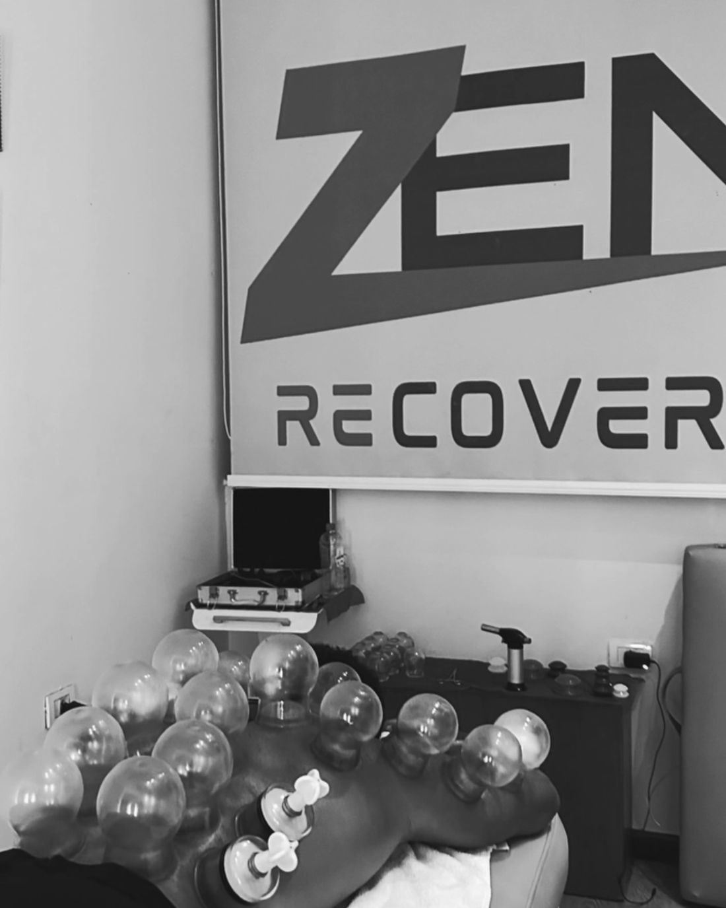
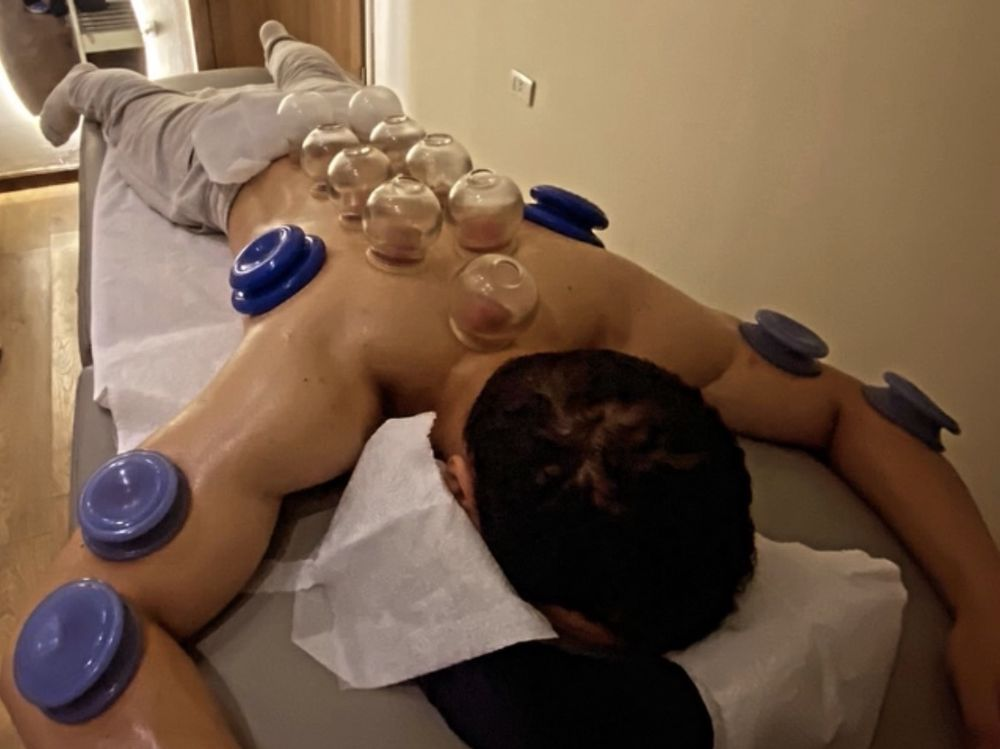
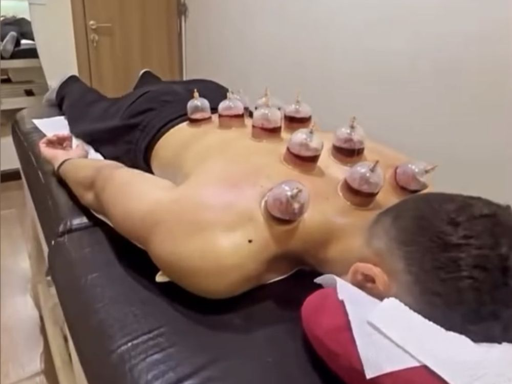
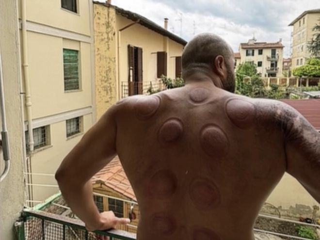

Step one
The cup rests on the skin.
Glass or soft silicone, warmed in the hand first. Your therapist chooses the spot: the length of a tight back, the top of a shoulder, the outside of a thigh. Nothing has happened yet, except that you've lain down.
Cupping · manual therapy · recoveryCairoDahabFlorence
Cupping is one of the oldest ways of asking a body to recover: after training, after a long week, after too many hours in one position. Scroll and we'll show you exactly what happens under the cup. Then tell us which city you're in.

The studio · FlorenceWhat happens under the cup
Five things happen in a session, in this order. Keep scrolling and watch each one.
Step one
Glass or soft silicone, warmed in the hand first. Your therapist chooses the spot: the length of a tight back, the top of a shoulder, the outside of a thigh. Nothing has happened yet, except that you've lain down.
Step two
With a pump, or the flash of a flame that's gone before the cup lands. The pressure inside drops. This is the whole idea: instead of pressing down into a muscle, cupping pulls upward. You feel a firm, spreading tug.
Step three
The tissue under the cup rises a few millimetres. Fresh blood moves toward the surface and the area warms. The tug settles into something closer to a deep stretch that's being held for you.
Step four
The cups stay put, or glide slowly over oiled skin. Most people go very quiet here. The room is warm, the breathing slows, and you're not asked to do anything at all.
Step five
Round, plum-coloured, sometimes surprising. They're not bruises: nothing struck you. They're the trace of blood the cup drew up, and they fade on their own in three to ten days. Darker usually means the area needed it more.
Ways we work
Every session starts with a short conversation about what your body's been doing lately. Then your therapist picks the approach. You can also ask for one by name.
Cups placed and left still. The classic session, and the one to start with if you've never tried it.
For · tight back, stiff shoulders, a first visit
How it worksOil on the skin, and the cup glides along the muscle. Closer to a massage, with the lift built in.
For · athletes, long desk days, recovery
How it worksA flame heats the air inside a glass cup for a second before it lands. The traditional way, warmer and deeper.
For · deep, chronic tension
How it worksSmall, shallow incisions before the cup goes back on, drawing a little blood out. Rooted in prophetic medicine and widely practised in Egypt. Done with single-use, sterile equipment only.
For · those who ask for it specifically
How it worksHands only: deep tissue and sports massage, often before the cups go on. This is where every Zen session starts.
For · recovery between training days, anything that needs hands first
How it worksTiny cups, very light suction, always gliding, never still. No marks. Leaves the skin flushed and the jaw looser.
For · puffiness, jaw tension, a lighter session
How it worksIn the room



Pick a city, a session and a time. Pay by card, or at the session if a therapist needs to look first.
BookA session for someone else, delivered by email as a code. Valid in one city, no expiry.
GiveFree sessions, invite discounts, a birthday treat. Your account keeps the tally.
See rewardsWhat to do before a session and after it, in plain words.
Read